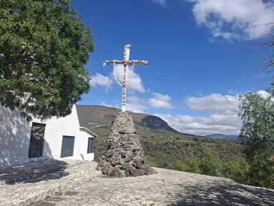
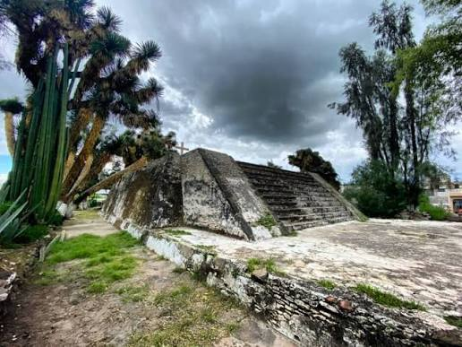
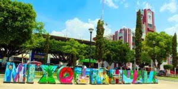
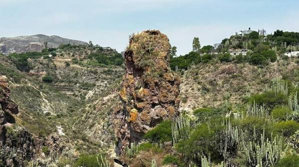
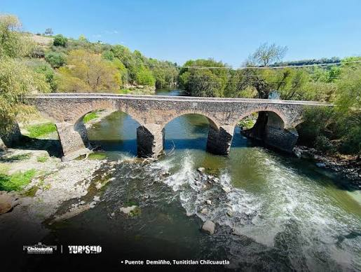
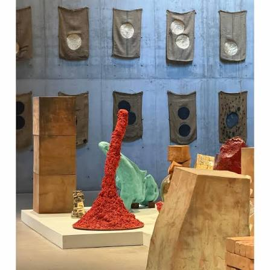
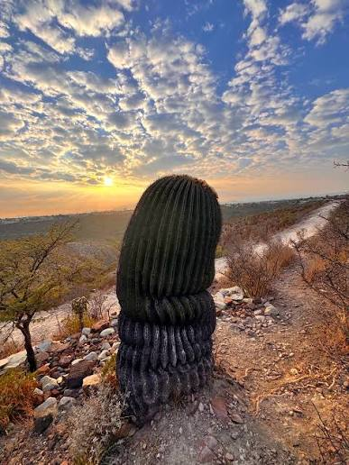
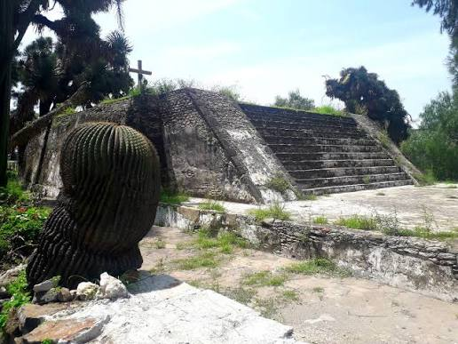
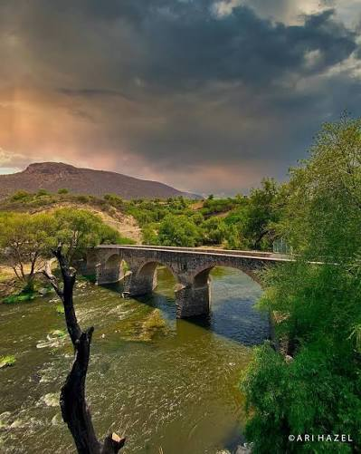

Mixquiahuala de Juárez
Descubre la magia del patrimonio cultural mexicano

Feria del Calvario 2026
Historia, cultura y tradición que nos enorgullece

Lugares Emblemáticos
Explora los rincones más icónicos de nuestra región
Descubre la magia del patrimonio cultural mexicano
Historia, cultura y tradición que nos enorgullece
Explora los rincones más icónicos de nuestra región
Explora los lugares más emblemáticos que harán tu visita inolvidable

Galería a cielo abierto con obras de arte que reflejan la identidad cultural de la comunidad. Un recorrido colorido por la creatividad local.

Vistas panorámicas espectaculares desde este punto elevado. Perfecto para fotografía y contemplación del entorno natural.

Vestigio arqueológico que conecta con nuestras raíces prehispánicas. Monumento histórico de gran importancia cultural.

El corazón de la vida social de Mixquiahuala. Un espacio arbolado perfecto para caminar, disfrutar los portales y relajarse en familia.

Se localiza en los límites del municipio, cerca de la ribera del Río Tula y la localidad de Tunititlan

Baño Grande, un balneario ecoturístico famoso por sus cascadas y aguas templadas

este imponente puente de piedra es una de las joyas de la arquitectura civil colonial en la región

la Casa de Byron Gálvez es el refugio donde el icónico pintor y escultor hidalguense

Ocultadas en la barranca, las Cascadas de La Cruz son un secreto natural rodeado de vegetación y rocas ideales para el senderismo

Ruta de senderismo desde la zona norte que te lleva a un santuario natural con cactus gigantescos de más de dos metros


Ubicada en el interior del panteón comunitario del barrio de Taxhuada, la Pirámide de Donijá, cuyo nombre en otomí significa "iglesia vieja" o "templo de la flor", es un monumento prehispánico descubierto accidentalmente en 1946 cuando los pobladores extraían piedra para construir la barda del cementerio.
I Zaragoza, 7ma Demarcación, 42700 Mixquiahuala, Hgo.
La pirámide une tres épocas: tiene base tolteca, fachada azteca y una cruz en la punta que mezcla el pasado indígena con la religión católica.
El lugar es de entrada libre y no tiene restricciones de horario. Su mantenimiento depende por completo de los vecinos, así que por favor cuida el monumento y no dejes basura.


Cruzando el Río Tula para conectar a Mixquiahuala con la comunidad de Tunititlan, este imponente puente de piedra es una de las joyas de la arquitectura civil colonial en la región. Su estructura de arcos antiguos rodeada de imponentes árboles de ahuehuete lo convierte en un punto ideal para los amantes de la fotografía histórica, el ciclismo de ruta y las caminatas al atardecer.
Parque puente de la Cruz, Av. Melchor Ocampo, 7ma Demarcación, 42700 Mixquiahuala, Hgo.
Los gigantescos árboles que crecen a los costados del río junto al puente son sabinos (ahuehuetes), algunos de los cuales tienen cientos de años y son de los ejemplares más antiguos de la región.
Al ser un puente antiguo que aún se utiliza ten extrema precaución al caminar por las orillas. De la misma manera, no dejes basura para proteger las áreas naturales y respeta la estructura histórica.